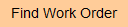
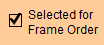
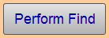
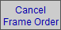
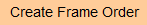
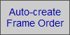
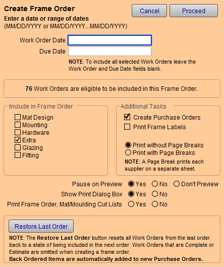

Create a Frame Order
or
The Frame Order report is a list you can print and send to your vendor to order supplies. This is the simplest way to create your vendor shopping list.
Tip: The Frame Order may be printed as a PDF and emailed as an attachment.
How to Create a Frame Order
Review the Work Orders (Optional)
Tip: This is a quick way to see which Work Orders are set to be included the next time you run a Frame Order.
-
On the Main Menu, in the Work Orders section, click the Find Work Order button.

The Work Order Find screen appears. -
Tick the Select for Frame Order checkbox.

-
Click the Perform Find button.

-
A list of all the Work Orders currently tagged for ordering appears.
Review the list. -
To exclude a Work Order from the Frame Order, click the Work Order number (to switch to form view), click the Cancel Frame Order sidebar button.

-
To include a Work Order in the Frame Order, find it and then click the Select for Frame Order sidebar button.
Generate the Frame Order
-
On the Main Menu, in the Work Orders section, click the Create Frame Order button.

or
Click Purchase Orders > Auto-create Frame Order button.

-
The Frame Order screen appears.

-
Leave the Date fields blank to select all Work Orders since the last time you placed a Frame Order.
or
Select a range of dates in either Work Order Date or Due Date. The proper date format to use is: MM/DD/YYYY
To enter a range of dates use: MM/DD/YYY...MM/DD/YYYY -
Optional: Choose which additional groups to include by selecting the Include in Frame Order checkboxes on the left, e.g. Mat Design, Mounting, Hardware, Extra, Glazing, and/or Fitting.
If you do your own fabric-wrapped mats or liners, then we recommend that you select Mounting and Glazing. -
Optional: Set the Create Purchase Order checkbox to Yes if you wish to have items also posted to Purchase Order(s) (items will be grouped by vendor and new Purchase Order records will be added to the Purchase Order file).
-
Optional: Set the Print Frame Labels checkbox to Yes if you wish to have labels printed (for your back room to apply to sets of chops).
-
Optional: Select your preferred page break; Print with Page Breaks prints each supplier on a separate sheet.
Note: POs can only be created if a vendor is selected in the Order From field in the Price Codes file. If items appear to be missing, check the the item's "Order From" field in the Price Codes file.
-
Optional: Choose whether or not you would like to preview before printing and/or pause on preview.
-
If you do not want to print any documents, then choose No in the Print Frame Order, Mat/Moulding Cut Lists field. This overrides any other print setting for this screen. Otherwise, choose Yes.
-
Click Proceed.
It takes a moment to compile the data: FrameReady locates Work Orders (which have not been previously ordered) and generates the list. You can tell if a Work Order has been added to the list by the Select/Cancel Frame Order sidebar button (on the Work Order screen).
If the message “No work orders match…” appears, then it means the list has already been created and no new Work Orders have been created since that time.
Important: The Restore Last Order button is great for those ‘oops’ times, for example, when you didn’t have the printer turned on or when you didn’t really mean to click the Proceed button and want to start over. To use it, the Restore Last Order button must be clicked before creating any new Work Orders (otherwise, the new Work Order is now the ‘last order’ which will be restored).
-
The Moulding Cut List is displayed first (it is included at this point to show any layered frames). This information may be necessary to get a correct fit when ordering chopped or joined frames.
Click Save as PDF or Print; then click Continue to proceed. -
The Matboard Cut List appears next.
The Matboard Cut List can be used as a pull sheet for small pieces of matboard you have in stock. Using your scraps makes you more profitable and reduces waste of unnecessary purchases. Cross off the items pulled and then remove them from your order.
Click Save as PDF or Print; then click Continue to proceed. -
If selected earlier, then the Frame Labels appear.
Labels can be applied to joined frames to quickly identify the correct frame for the order. They can also be divided and distributed to the person doing the joining. Another option is to place the labels on the sticks of moulding. Labels left on the sheet easily tell you which frames have either not arrived or have not been joined.
Click Save as PDF or Print; then click Continue to proceed. -
The compiled Frame Order (with materials sorted by Supplier field in the Price Codes file, sub-sorted by Group) appears.
Use this Frame Order document to double-check your first several Purchase Orders to ensure that all items on the Frame Order have been assigned an "Order From" company and therefore appear on a Purchase Order. See also: Set up Purchase Orders
Click Save as PDF or Print; then click Continue to proceed.
Tip: You can click the flip book on the status bar (top left) to see the pages and view the list of materials. This may help in deciding if a PO can be ‘omitted’ and held until there are more materials to order from the vendor.
-
If a Special Order was used in a Work Order, then the Artwork to be ordered list appears.
Important: A Purchase Order will not be created for the Artwork here. You must use "Create Product Order" on the Main Menu to generate a Purchase Order for art and retail products.
Click Save as PDF or Print; then click Continue to proceed. -
If selected earlier, then FrameReady shows a list of the vendors it is prepared to create Purchase Orders for.
-
At this point you may click Omit for any vendors from whom you do not wish to order materials at this time (e.g. you order from vendors on different days of the week or there is not enough volume for free shipping).
The data for any omitted vendor is stored in a temporary file until the next time you process the frame order.
Note: If you Omit a vendor and then go back and change the Work Order containing the omitted vendor, the changes will not be updated in the temporary file. To have the changes appear on the next purchase order, duplicate the Work Order, make your change, and then delete the original Work Order.
-
Click Continue (you can also Show All or Cancel).
If you select Show All, then any Omitted Suppliers do not appear on the list. If you select Cancel, then all orders on this list are held until you create the next Purchase Order.
The newly created Purchase Order records appear, one for each vendor. -
Click on each vendor name to see the list of items to be ordered.
-
The default status of all new Purchase Orders is NotPlaced.
When the order is sent to the company, you should mark the radio button Placed to indicate that it has been dealt with.
Mark as Received when the order arrives. -
Items can also be manually entered onto the Purchase Order, e.g. a Bainbridge mat. Type in B4106 then Tab : the Description, Dimensions and Unit Price populate. Next, enter the Qty to order.
Tip: Items can also be added to an 'open' Purchase Order directly from the Price Codes file by going to the item needed and clicking on the Post to Purchase Order button. The amount in the ReOrder field will be added to the Purchase Order.
How to Consolidate Your Order
Some items may appear more than once. These items can be totaled automatically using the Consolidate button.
-
Only Purchase Orders can be consolidated.
Helpful Notes for New Purchase Orders
-
All new Purchase Orders default to NotPlaced. When the order is sent to the company, you should change the field to Placed and then mark it as Received when the order arrives.
-
When the order is received, check the list against the packing slip. Use the Accept button to identify items that have arrived and can be added to inventory. When clicked, the Accept button text changes to show that inventory has been Updated. If a different amount arrived, then first change the number in Qty or Footage before clicking Accept.
-
Alternatively, tick the Back Order checkbox and the item is flagged to be automatically added to the next PO (and when it is added to the new PO, it will be removed from the current PO).
© 2023 Adatasol, Inc.